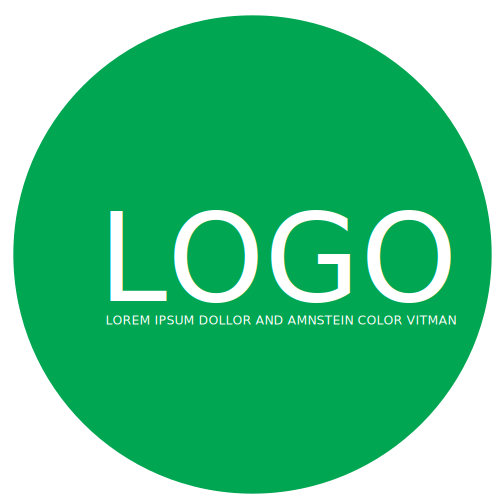

Conhecimentos
Ferramentas
Com a utilização de novas ferramentas o desenvolvimento está cada dia mais dinâmico e é sempre bom estar atualizado, e tento usar essas ferramentas para cada dia melhorar meu serviço.
Front
Focado mais em performance procuramos usar códigos e ferarmentas para sempre dar ao usuário uma experiência agradável. Usandos ferramentas como Grunt, Node o bom javascript, criamos fronts bem leves e rápidos para qualquer cliente.
Back
Com bastante experiência em PHP e seus frameworks(CakePHP - Zend), as criações de aplicações são rápidas e eficazes, e de acordo com o gosto do cliente. e Sempre usando a boa e velha Oritanção a Objeto para sempre aumentar a segurança das aplicações.
- Grunt
- Yeoman
- Bower
- Shell
- HTML 5
- CSS 3
- Javascript
- Jquery
- SEO
- PHP
- Ruby
- Java
- CakePHP
- Zend
- Rails
Cases
-
Koyama Imóveis
Tecnologia: PHP
HTML5, CSS3, Javascript e Jquery
Desenvolvimento Front e Back da aplicação.
-
UabMotors
Tecnologia: PHP
HTML5, CSS3(sass), Javascript e Jquery/Ui e SEO
Desenvolvimento Front e Back da aplicação. Uso do Framework CakePHP
-
CRN
Tecnologia: PHP
HTML5, CSS3, Javascript
Desenvolvimento Back da aplicação. Uso de CakePHP
-
Norobras Impermeabilizantes
Tecnologia: PHP
HTML5, CSS3(sass), Javascript e Jquery
Desenvolvimento Front e Back da aplicação. Uso de CakePHP, Yeoman (grunt - bower)
-
Crédito Pravaler
Tecnologia: PHP
HTML5, CSS3, Javascript e Jquery
Desenvolvimento Back da aplicação. Uso de Zend Framework e Wordpress. Utilizado Zend para Comunicação com WebService.
-
Coral Infantil Eco
Tecnologia: PHP
HTML5, CSS3(sass), Jquery
Desenvolvimento Front e Back da aplicação. Uso de CakePHP
-
Manioca Sistema de Restaurantes
Tecnologia: PHP
HTML5, CSS3(sass), Javascript
Desenvolvimento Front e Back da aplicação. Uso de Zend Framework com ferramenta GRUNT
-
Highline do Brasil
Tecnologia: Ruby
HTML5, CSS3(sass), Javascript
Desenvolvimento Front e Back da aplicação. Uso de Rails como framework, e Ferramentas como GRUNT e Google Maps API para gerar os contadores de itens
-
Abradit Sima
Tecnologia: Ruby
HTML5, CSS3(sass), Javascript e Jquery
Desenvolvimento Front da aplicação. Uso de Railse Gebo admin Tools.